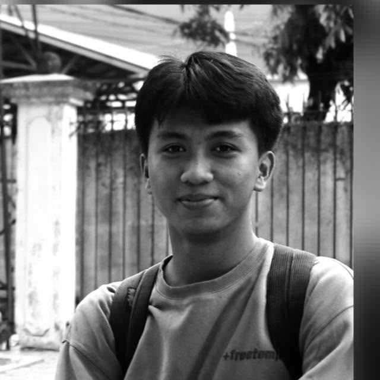

My Profile

Muhammad Relly Ixsani
Student Yarsi
NPM: 1402025038About Me
Saya merupakan pribadi yang dinamis dan berorientasi pada hasil, dengan minat besar pada bidang komputer dan teknologi. Saya tumbuh dalam keluarga yang menjunjung tinggi rasa hormat dan tanggung jawab, sehingga nilai-nilai tersebut saya terapkan dalam setiap kolaborasi dan hubungan interpersonal. Saya percaya bahwa kompetensi dan karakter yang kuat merupakan kunci untuk memberikan dampak positif bagi lingkungan sekitar.
Data Keluarga
| Nama | Hubungan |
|---|---|
| Mochamad Ridwan Hamid | Ayah |
| Sulastri | Ibu |
| Mochamad Sutanto Wibowo | Kakak |
| Muhammad Relly Ixsani | Saya Sendiri |
| Tiara Handayani | Adik |
My Social Media
Mari Berteman melalui akun media sosial saya.
📸 Instagram 💌 Whatsapp